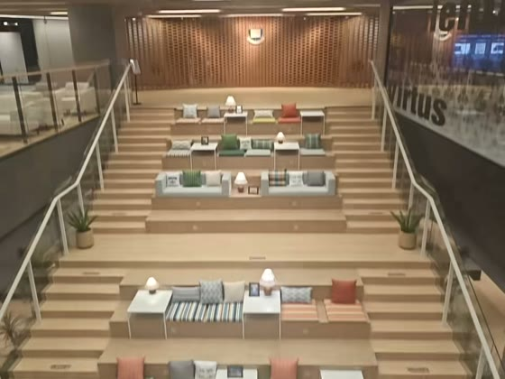
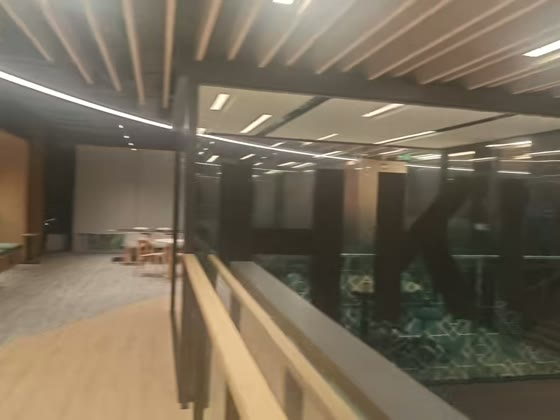
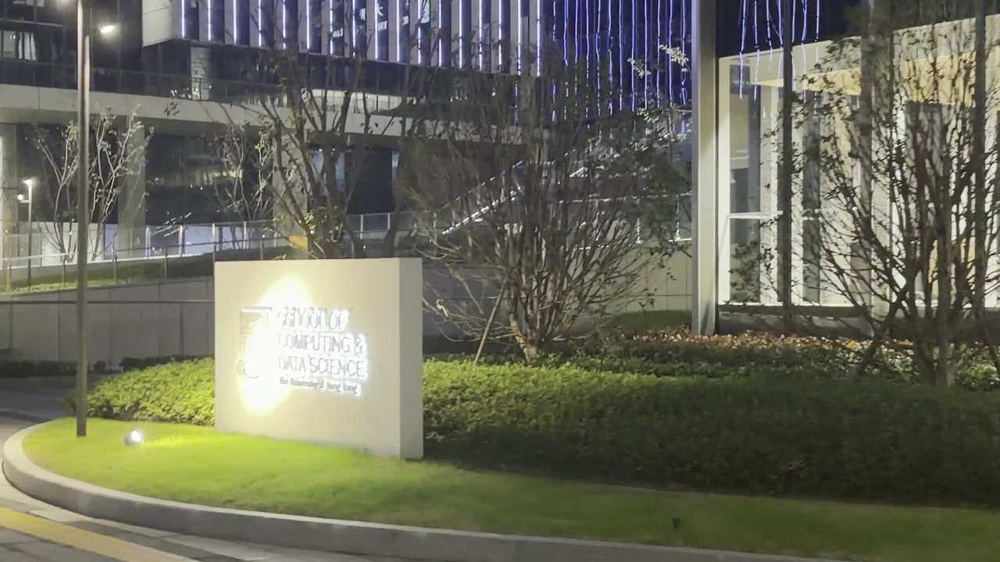
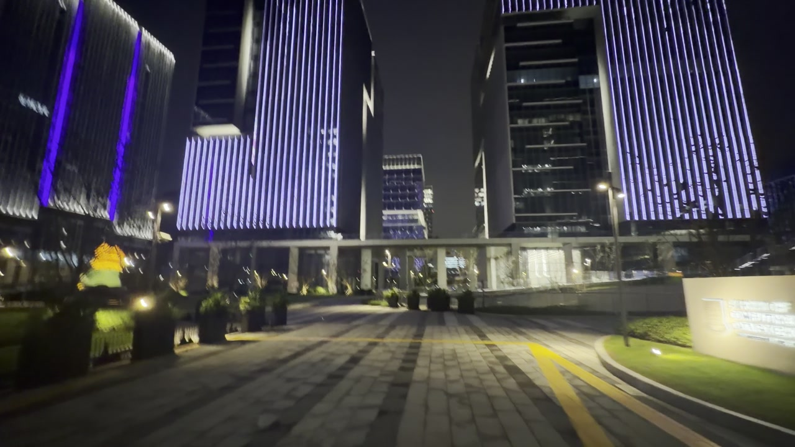
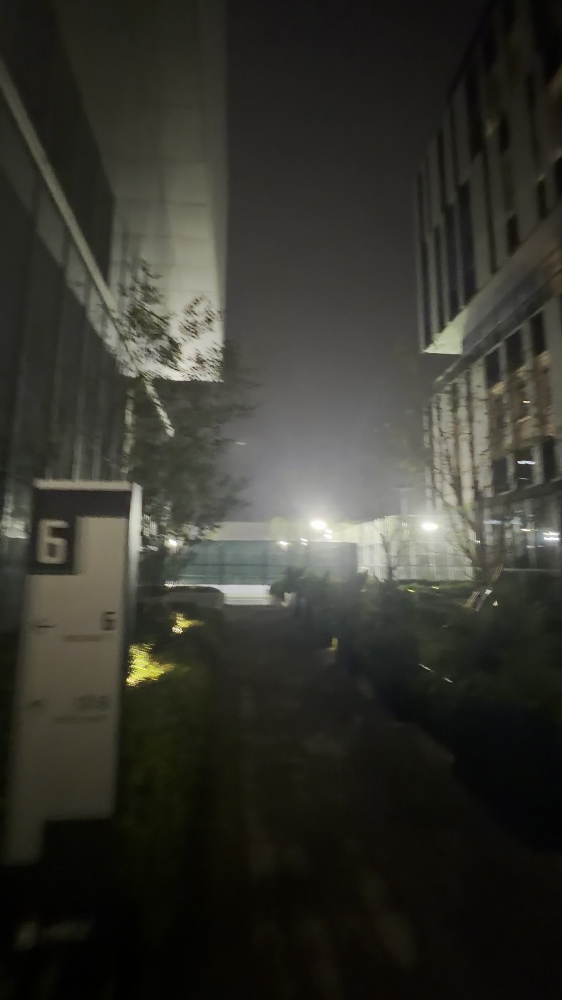
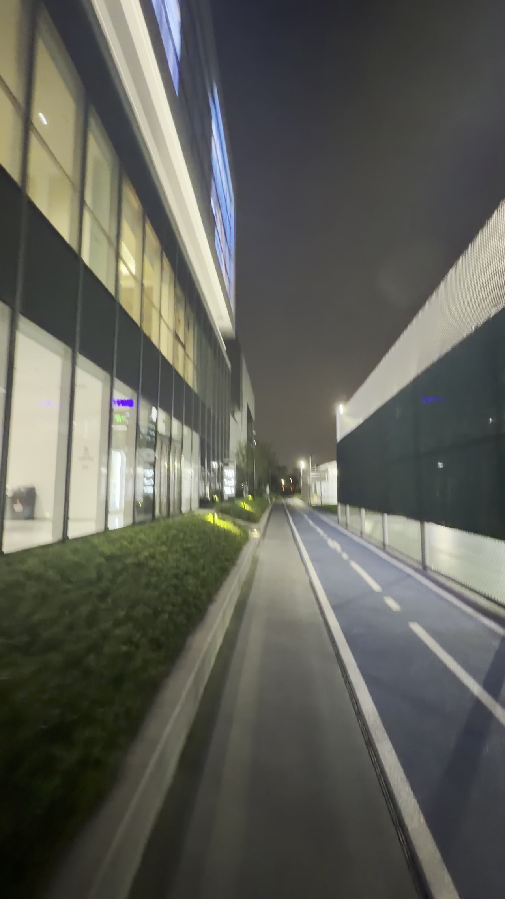
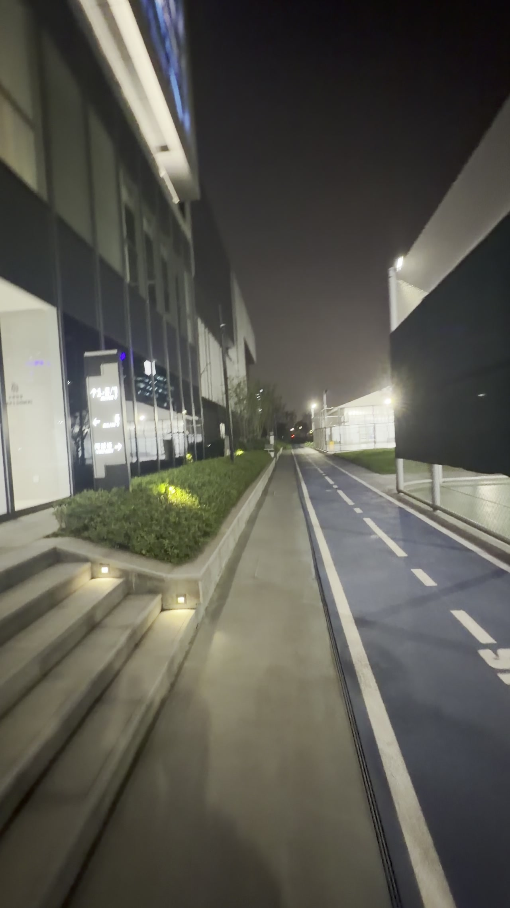

5号楼4楼：中央木阶座席、两侧窄楼梯、靠垫、白桌、玻璃护栏。楼栋楼层由用户确认；尺寸、行数及室内朝向估算。


上部走廊、玻璃房间、木格栅吊顶；未推断完整室内平面。

CDS-1 门厅、雨棚、地灯；门厅身份由连续镜头与可读校名核对。


学院石质景观牌、低绿篱、树木支撑架、上照灯。标牌位于入口附近，模型坐标估算。


高层立面竖向淡紫灯带；只补可见类型，精确覆盖范围与亮度暂定。

条带铺装与门厅侧步道、苗木绿篱，远处礼堂；路径宽度、间距估算。


清晰6号楼导视牌，前方球场围网；有助于核对礼堂附近路线，但不是测绘总图。


蓝色双向跑道、边线、虚线、围网；长宽和精确位置暂定。


门前三级台阶、踏步灯、抬高绿篱与跑道排水沟；此门楼栋未确认，暂挂B07北侧，可调整。